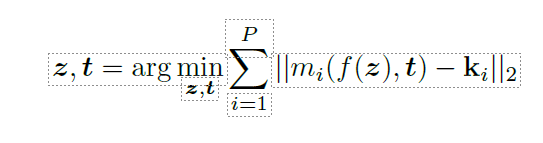
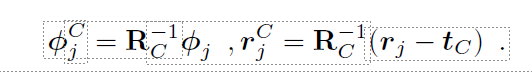
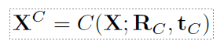
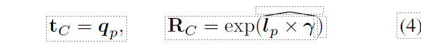
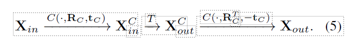
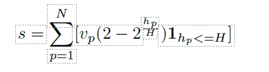

Generating Continual Human Motion in Diverse 3D Scenes¶
Abstract¶
我们介绍了一种在动画师指导下合成三维场景中胡人动作的方法。给定一组稀疏的（3 或 4 个）关节位置（如人的手和两只脚的位置）和三维场景中的种子运动序列，我们的方法从种子运动开始生成合理的运动序列，同时满足所提供关键点的约束条件。我们将连续运动合成问题分解为沿着关键点指定的路径行走和进出关键点指定的动作，这样就能在不明确包含场景信息的情况下长时间生成满足场景约束条件的运动。我们的方法只使用与场景无关的 mocap 数据进行训练。因此，我们的方法适用于各种几何形状的三维场景。为了实现可信的无漂移连续运动合成，我们的主要贡献是在以目标为中心的标准坐标系中生成运动，其中下一个直接目标位于原点。我们的模型可以生成长序列的各种动作，如抓取、坐下和倾斜等，并以任意顺序串联在一起，在不同几何形状的场景中进行了演示： HPS、Replica、Matterport、ScanNet 和使用 NeRFs 表示的场景。多项实验证明，我们的方法优于现有的三维场景路径导航方法。
我们的方法概述。我们通过将人体运动分为三个阶段来生成满足关键点约束条件的人体运动：行走运动（在关键点之间行走时产生动画）、过渡运动（将行走运动与关键点指定的姿势进行混合）和过渡运动（将人体运动恢复到行走姿势时产生动画）。我们使用自回归变换器 WalkNet 来合成行走动作，并使用遮罩式自动编码器变换器来生成混合动作。通过将运动移动到以目标为中心的典型坐标框架中，我们的方法可适用于多种三维场景。
Introduction¶
我们的目标是在任意三维场景中生成由动画师指导的丰富的长期人类行为，包括各种动作和动作之间的转换。如图 1 所示，这样的系统应允许在目标引导下生成人类从一个地方移动到另一个地方的行为，例如，走向沙发坐在上面，然后站起来走到架子上拿东西。它应该允许用户以最少的交互指定要执行的动作类型，同时保持合成数据生成、机器人、VR/AR、游戏等应用所需的真实感和表现力。
虽然在三维场景中由模拟器引导的运动合成方面，业界已经取得了可喜的进展，但大多数作品仅限于单一动作，而且不处理过渡[73, 69, 62]，因此无法产生长距离的多样化运动。它们也无法应用于各种真实场景 [58、65、66、26]。究其原因，这些方法是通过对场景地形进行调节来合成运动，需要在三维场景和物体中进行三维人机交互的数据集上进行训练[27, 26, 73]。要将这些方法应用于任意三维场景，就需要收集无数可能的三维场景和物体的运动数据，而这是无法扩展的。
相比之下，人类可以在杂乱无章的场景中穿梭，从从未见过的架子上挑选物品，坐在新奇的家具和表面上。场景中的大部分杂物通常都会被忽略，而最重要的不是物体/场景几何形状的确切尾部，而是它们是否能承受每个动作。我们的假设是，运动在很大程度上是为了避开障碍物，专注于到达下一个直接目标或环境中的目标接触点。因此，在不考虑三维场景所有细节的情况下生成人类动作应该是可能的。
基于这一见解，我们提出了一种新颖的框架，用于在三维场景中进行动画师指导的运动合成，而无需重新依赖场景注册的运动数据。因此，我们的方法可以在常规的 mocap 数据上进行训练，而这种数据相对容易捕捉，而且非常容易获得 [46]。由于我们的方法并不明确以场景的几何形状为条件，因此可用于具有不同几何形状的三维场景。
我们的方法依赖于两个关键观察点：首先，我们可以将三维场景中的动作表示为一组稀疏的所需达到的目标接触点（我们使用 3 或 4 个接触点，如两只脚和一只手的位置或两只脚和根部的位置），我们将其称为动作关键点。这些关键点可以由动画师使用界面提供，也可以由自动启发式算法生成，从而让动画师在生成动作的速度和控制之间进行权衡。本文的一个有趣发现是，动作关键点是三维场景中多个动作的强大抽象，可用于执行 "坐在那里 "或 "抓住这个高度 "等指令。其次，在三维场景中避开障碍物可以通过路径跟踪来实现。我们面临的挑战是，如何沿着任意长的路径，使人类平稳地进入和离开动作，然后走向下一个目标。为此，我们将运动分为三部分：行走、进入和离开动作的转换。对于路径跟随和转换，我们引入了完全使用场景无关的运动数据来训练运动合成模型的想法，以达到一个标准坐标框架的原点。对于导航路径，该模型通过迭代采样收敛于使用路径上的航点和切线定义的标准坐标框架的原点。对于进出动作的转换，则通过将目标姿势置于典型坐标系的原点来合成运动。通过在典型坐标系中迭代合成运动，我们的方法可以实现远距离运动合成，从而在三维场景中实现行走和各种动作之间的转换。
与现有的运动合成方法不同[26, 58]，我们的方法无需任何人工阶段或动作注释即可合成运动。
我们首次在大量场景数据集上演示了远距离人体运动合成： Replica [61]、Matterport [8]、HPS [22]、Scannet [10] 和 NeRF 场景。此外，我们还展示了我们的模型可以在不同的地方执行动作，例如从任何高度的架子、桌子或橱柜上抓取物品，或坐在任何可以坐下的表面上。我们将公开我们的代码和模型，供动画师在三维场景中同步目标导向的人体动作。
概括起来，我们的贡献如下：
- 我们提出的方法不同于现有的三维场景运动合成方法，它只使用常规的运动捕捉数据，并且可以在不同的三维场景中使用。
- 我们引入了一种新颖的想法，即在典型坐标框架的原点迭代收敛运动，从而在三维场景中合成远距离运动。
Related Work¶
无三维场景下的人体运动预测。人类运动动态预测是计算机视觉和图形学领域研究已久的问题。经典的研究成果包括使用隐马尔可夫链 [5] 和高斯过程 [64] 以及基于物理学的模型 [44] 预测未来的运动。最近，循环神经网络[19, 31]被用于运动预测[17, 48, 3]，还与图神经网络[36, 47, 40, 11]和变异自动编码器[35]结合使用，以增加多样性[23, 74]。Yuan等人[71]。循环方法的一个固有问题是随时间漂移[1]。 最近的一些方法采用变换器来生成无条件的或以文字和音乐为条件的运动序列 [1, 41, 39, 51, 52]。我们也是基于变换器架构，但目标是在真实三维场景中生成运动。 Motion Inbetweening [14, 25, 49, 70, 2, 34] 是运动合成的另一种经典模式，其任务是在动画师提供的关键帧之间填充帧。 我们的方法基于最近在变换器架构方面取得的进展[41]，以及运动中间化等经典理念，并结合了典型坐标帧和动作关键点表示法的新思路，以生成三维场景中的运动。
视频游戏中的角色控制。运动匹配[54]、其学习变体[9, 32]和运动图[38, 15, 37, 56, 55]是业界常用的生成运动序列的经典方法，这些运动序列由环境和用户指定的约束条件控制。与我们的目标类似，一些作品[53, 7]将这些方法与 IK 结合使用，生成合成场景中的人类行为。然而，这些方法需要大量人力才能制作出逼真的动画，而 IK 方法很容易产生非逼真的动画。 Holden 等人[33] 的深度学习变体在 RNN 中引入了相位条件，以模拟行走运动的周期性。在 Starke 等人[58, 60, 59]的几项研究中，局部相位的概念被扩展用于合成场景感知运动、篮球运动和武术运动。所有这些方法都能生成令人信服的运动，但对于非周期性运动而言，相位并不直观，通常需要手动标注。
以场景为条件的静态人体姿态。人、场景和物体之间的关系是计算机视觉和图形学中另一个经常研究的课题。经典作品包括三维物体去保护方法 [20, 21] 和利用人体姿势进行承受力预测的方法 [12, 18, 16]。 最近有几项研究利用最近捕获的人机交互数据集[27, 22, 57, 4, 63, 6]，以三维场景为条件生成可信的静态姿势[42, 74, 68, 72, 28, 76]。与静态姿势不同，我们要生成与场景相一致的动作，而这要难得多。
场景感知运动合成。一些研究利用强化学习来合成合成三维场景中的导航[43, 75]。其他作品则专注于单一动作，如抓取 [62, 69]，但没有展示新动作的转换。这些方法并没有在有多个物体和杂波的真实三维场景中进行演示。最近的真实动作数据集 [27, 22, 57, 4, 63, 6] 为合成三维场景感知动作的方法提供了动力 [66, 65, 6, 67]。这些数据集对推动研究进展至关重要，但却无法捕捉真实世界场景的丰富性和多样性。因此，这些方法通常只在 PROX [27] 和 Matterport [8] 的小场景上进行演示。 我们从 Hassan 等人的研究[26]和 Zhang 等人的研究[73]中汲取灵感，前者将路径规划与神经运动合成相结合，后者则合成了接触控制的人椅互动。这些方法需要将孤立的交互对象的几何形状作为输入，因此很难推广到真实的三维场景中。与这些方法不同的是，我们在通用的真实三维场景中演示了长链式动作序列，我们的原点规范化和动作关键点使其成为可能。
Method¶
我们的方法将一个种子运动序列和一系列动作关键点 {a1, . an} 指定场景中不同位置的互动。这些关键点可以由用户指定，也可以使用语言命令和场景分割生成（第 3.2 节）。我们的目标是合成从种子动作开始并在输入列表中的每个动作关键点之间过渡的动作。 第一步是利用逆运动学和姿势先决条件（3.3）优化适合目标位置动作关键点的姿势。这些姿势与起始种子动作一起作为锚点，指导动作合成过程。 通过将场景无关的运动捕捉数据置于以目标为中心的标准坐标框架中（第 3.4 节），我们训练 Walknet（第 3.5 节）和 TransNet（第 3.6 节），前者用于合成与标准坐标框架原点相接的步行运动，后者用于合成种子运动序列与同样位于原点的目标姿势之间的运动。在测试时（见图 2），WalkNet 用于沿着用路径规划算法计算出的路径到达规范化的中间目标，从而通过连续到达原点产生长时间运动。一旦行走运动到达锚姿势附近，TransNet 就会合成从行走运动到锚姿势的转换，反之亦然。这样就可以合成三维场景中的运动，而无需三维场景中的运动数据。我们的框架具有通用性和高度模块化的特点，因此可以用新的运动合成方法对其进行更新。
SMPL Body Model¶
我们使用 SMPL 身体模型 [45] 来表示人体。SMPL 是一个可微函数 M(j,θ,t,β)，它将全局身体方向 ϕ、姿势 θ、平移 t 和形状 β 参数映射到人体网格的顶点以及 SMPL 骨架的三维关节位置。我们假设 β 在我们的方法中始终保持静态。我们用 SMPL 参数元组的有序列表来表示运动序列。例如，C = [(r, ϕ, θ)j ]j=1:D 表示包含 D 个帧的运动序列。
Generating Keypoints in a Scene¶
关键点可以通过三维用户界面有效收集（如附图所述），也可以从场景的几何图形中推断出关键点，然后通过动作标签或语言生成。图 4 是自动生成关键点的一个示例。给定一个带有语义标签和任务语言描述的场景点云，我们可以使用简单的启发式方法来生成关键点，从而合成所描述的运动。更多详情请参见附注。
From Action Keypoints to an Anchor Pose¶
第一步是根据目标位置 a = {ki}i=1 的动作关键点推断姿势，其中 ki∈ R3 表示相应 SMPL 关节的理想位置，用 mi(-) 表示。我们发现，通常只要三到四个关节（P = 3，4）就足够了。由于问题严重受限，我们对 VPOSER [50] 的潜空间进行优化，用 z 表示。将 f(z) → (ϕ, θ) 作为从潜空间 z 到 SMPL 姿态参数的映射，我们最小化以下目标

请参阅补充材料了解更多细节，以确保优化效果良好。我们对每个目标动作 a1 ... aN 重复这一步骤，得到 N 个姿势锚 A = {tiA, ϕi , θi }i=1:N 。
Canonical Coordinate Frame¶
我们在三维场景中合成运动的关键想法之一，就是让变换器合成的运动始终在一个标准坐标框架的原点处汇合。这样，在测试时，就可以通过连续到达原点处的下一个目标来合成长运动。因此，我们利用序列片段中最后一帧的平面变换 tC 和旋转 RC 对训练序列片段进行规范化处理，具体方法如下

根据构造，这种变换会输出一组新的 L 帧[(rC , 蠒C , 胃)j ]j=1:L，其中最后一个姿势位于原点，并朝向统一的定向轴纬（任意固定轴）。让 X 表示一个矩阵，其列是矢量化的运动参数（姿势和变换的组合）。 我们将使用以下符号来去掉公式（2）中对一个完整序列的典型化，即

在以目标为中心的典型协同帧中合成运动，使我们能够合成三维场景中沿路径行走的运动（第 3.5 节）以及进出动作的转换（第 3.6 节），而无需场景注册数据。
WalkNet¶
训练 我们使用长度可变的 L 规范化行走序列片段（最后一个姿势位于原点）来训练 WalkNet。WalkNet 将 K 个运动帧作为输入 Winp = [(rW , ϕW , θW )j ]j=1:K 并预测序列中的下 K 个帧 Wout = [(rW , ϕW , θW )j ]j=K:2K 。从训练行走序列中随机抽取大小为 2K < L 的训练子片段。 如上一节所述，变换器将序列表示为矩阵（列为变换和姿势），输入矩阵 Xin∈RK×219 ，输出矩阵 Xout∈RK×219 。我们将学习到的映射平表示为 T : Xin → Xout。请注意，我们输入的姿势是矢量化的关节旋转矩阵，这使得学习比使用关节角度更稳定。
测试时间。我们使用 WalkNet 沿着较长的路径行进，方法是将路径分解为与原点对应的中间目标（图 3）。为了避开障碍物穿越场景，我们使用 A-star[24]计算种子运动 I 和第一个锚姿势 A1 之间的路径。沿着路径，我们对 P 个目标进行采样，并计算路径的切线：{qp, lp ∈ R3}p=1...P 。然后，我们进行递归规范化，使切线 lp 与规范轴 γ 对齐。

其中，exp(-)是从螺旋对称矩阵 lp × γ 中恢复旋转的指数映射。 因此，从目标 p - 1 到目标 p 的运动序列可以通过规范化、用学习到的映射 T 预测未来运动和非规范化来获得

虽然转换器会输出 K 个未来帧，但在测试时，为了提高性能，我们会以 1 的步长递归使用转换器。这意味着我们每次只预测一个姿势，而舍弃 K + 1 : 2K 帧。在这种方法中，运动始终以原点为中心，我们无需明确地将目标坐标作为输入发送给网络，也不会发生漂移。当我们足够接近锚点姿态时，我们使用 TransNet 预测过渡。
TransNet¶
我们在一个典型化的框架中再次合成行走和动作之间的转换。为此，我们使用放置在典型坐标框架中的 AMASS 序列来训练 TransNet（基于变换器的运动切换器）。TransNet 的任务是从种子序列 Xin 到目标锚姿势的运动填充。
这部分不好复制，不翻译了
Chained actions¶
有了我们的模型和表征，我们就可以轻松地连锁操作。在运行时，我们必须在不同的位置满足任意数量的动作关键点 {a1, ... aN }。首先，我们按照 3.3 节中的说明计算锚点位置。用 A* 计算出连接行动位置的无障碍路径。我们依靠 WalkNet 追踪路径，直到足够接近第一个锚点位置。我们将 WalkNet 的最后 M/2 个预测帧和锚点姿势输入 TransNet，预测向第一个锚点姿势的过渡。为了过渡到其他位置，我们也使用 TransNet，但不做任何修改。我们沿着从 a1 到 a2 的路径，以固定距离 δ 取样一个位置，并从数据库中放置一个行走姿势。然后，TransNet 可以过渡到这个行走姿态（图 5）。然后，我们激活 WalkNet，重复这一过程，直到所有动作都执行完毕。此外，我们还可以重复使用 TransNet 在同一位置执行多个动作，例如在不同高度抓取。
Experiments¶
在本节中，我们将介绍我们方法的实施细节。接下来，我们将把我们的方法与现有方法进行比较。实验表明，我们的方法明显优于现有的基线方法。接下来，我们将介绍我们的设计选择，最后介绍我们方法的定性结果。
Implementation Details¶
WalkNet 和 TransNet 是 BERT [13] 风格的全注意力转换器。两者都由 3 个注意力层组成，每个层由 8 个注意力头组成。我们对这两种转换器的嵌入大小都设定为 512。更多详情，请参阅补充材料。在训练两个转换器时，我们将学习率设置为 1e-5。两个网络都使用 L2 损失进行训练。我们设置 M = 120，K = 30。我们对三个不同的 M 值进行了实验，发现 M = 120 产生的滑脚现象最少。请参阅该实验的补充材料。
Datasets¶
运动数据： 为了训练 TransNet 和 Walknet，我们使用了大型 mocap 数据集 AMASS [46]。具体方法请参见补充材料。
场景数据集： 我们证明，我们的方法能够在 Matter-port-3D、HPS、Replica 和 ScanNet 数据集的场景中生成逼真的人体运动。所有这些数据集都是使用 RGB-D 扫描仪或激光雷达扫描仪重建的，扫描面积从 20 平方米到 1000 平方米不等。Replica 和 Matterport 场景包含完美的几何图形，而 ScanNet 场景则不然。我们的方法能够适用于所有这些场景。
Evaluation Metrics:¶
我们利用感知研究和脚部滑行指标，将我们的方法与现有的基线方法进行比较。此外，我们还使用相同的脚滑度量标准消减了我们方法的各个组成部分。 感知研究： 我们合成两个运动序列--一个使用我们的方法，另一个使用基线方法，并在感知研究中向参与者展示这两个合成序列。参与者需要回答 "哪个动作看起来最逼真？"和 "哪个动作最能满足场景约束条件？研究的方式是迫使参与者从面前的两个动作中选择一个。 脚底滑行 (FS)： 脚部滑动度量是指在合成运动过程中脚部滑动的程度，单位为厘米/帧。对于 N 帧，其定义如下

其中，hp 是顶点的高度，vp 是右脚趾上的脚顶点在帧 p 中的速度，H = 2.5 厘米
Comparison with Baselines¶
如上所述，目前还没有一种方法可以解决在任意三维场景中进行连续运动合成的任务。为求完整，我们尽力将我们的方法与现有的三种方法进行比较： SAMP[26]、GAMMA[75]、Wang 等人[66]，它们都是通过在三维场景中导航 A* 路径来生成动画引导运动。虽然这些方法使用了不同形式的动画引导（如动作标签），但我们对它们进行了修改，加入了我们的方法所使用的 KP 信息。需要注意的是，除 GAMMA 外，这些基线都无法在不做重大修改的情况下应用于任意三维场景，下文将对此进行说明。
SAMP：SAMP 完全由 Unity 编写，只能在合成场景中合成坐和躺的动作。与 SAMP 不同，我们的方法不需要人工动作注释。交互对象和要执行的动作是作为输入提供给 SAMP 的动画指导。SAMP 通过交互对象的地理条件和导航 A* 路径来合成动作。为了与 SAMP 进行比较，我们在一个测试场景中使用 Unity 中的合成对象来表示交互对象。我们使用 KPs 表示测试场景中的动作方向，并使用该方向将测试三维场景中使用的 A* 路径移植到 Unity 中，然后运行公开可用的 SAMP 代码。有关具体细节，请参阅附注。请注意，SAMP 不能合成链式动作，也不能在任意三维场景中部署。例如，它不能坐在楼梯上，也不能在书架附近执行抓取动作。由于 SAMP 也能在 A* 路径上导航，因此为了完整起见，我们将比较结果包括在内。
Wang 等人 我们在 HPS、Replica 和 Matterport 数据集的场景上运行 Wang 等人的预训练代码。我们没有使用原论文中的动作标签来生成锚点姿势，而是用我们的逆运动学步骤生成的运动锚点取代了这一步骤。由于 Wang 等人的研究[66]是使用 PROX 数据集进行训练的，并通过明确的场景几何条件来同步 A* 路径上的导航运动，因此它根本无法推广到这些数据集之外的三维场景。
GAMMA： GAMMA 只能导航三维场景，无法合成人与场景的互动。与我们方法中的导航部分类似，它使用路径的起点和终点作为动画引导。为了进行比较，我们使用 A* 在三维场景中生成了一组路径，并使用 GAMMA 和我们的方法合成了沿该路径的行走动作。GAMMA 无法遵循路径的精确航点，因此会与 3D 场景产生明显的穿插。
有关这些基线合成的运动视觉效果，请参阅补充视频。我们使用每种方法在 5 个不同场景中合成了 5 个总时长 300 秒的运动序列，用于感知研究。表 1 1 中，我们报告了 50 名参与者的感知研究结果（见第 4.3 节）。每一列对应的是选择该列标题对应方法的用户百分比。我们的结果得到了绝大多数参与者的青睐。表 3 3 中，我们报告了与脚滑指标相对应的数字。
Ablation Studies¶
我们比较了 TransNet 和 SoTA Inbetweening 方法 NeMF [29]，它们都能完成转入和转出任务。对于我们在标准坐标框架中填充 M -1 帧的任务，TransNet 能产生更自然的动作，而脚部滑动较少。我们推测出现这种情况的原因是 NeMF 是一种通用的内穿梭器，可以填充任意数量的帧，而 TransNet 是一种运动内穿梭器，专为在标准坐标帧中填充 M/2 -1 个运动帧而设计。我们对 36 名参与者进行了一项新的用户研究，要求用户通过 NeMF 和 TransNet 对 20 个运动序列的自然度进行评分。结果见表 2。
其他路径跟踪方法能否取代 WalkNet？我们提供了与 SAMP、Wang 等人和 GAMMA 的比较，它们都是导航 A* 路径的方法。正如我们的实验所表明的，我们的方法在导航方面优于这些现有方法。为了进一步完善，我们在步行数据上训练了 SoTA 步行方法 MoGlow [30]。在 150-200 米长的 A* 路径上使用该方法时，大约 30 秒后就会出现明显的脚步打滑现象。我们推测出现这种情况的原因是 MoGlow 在自我中心坐标框架内合成运动，因此 A* 提供的控制信号变化迅速，导致 MoGlow 合成的运动出现明显漂移。在表 2 中，我们使用 36 名参与者进行了用户研究，并在这些路径上将我们的方法与 MoGlow 进行了比较。在表 2 中，我们的方法优于 MoGlow。
基于语言的关键点布局效果如何？在本实验中，我们比较了使用手动关键点放置法和基于语言的关键点放置法合成的动作。我们使用这两种方法生成的关键点合成了 5 个运动序列，并通过一项有 36 名参与者参与的用户研究对合成序列进行了比较。当用于运动合成时，这些关键点产生的质量与手动关键点放置相似（表 2）。
用户手动提供关键点需要多长时间？我们开发了一个用户界面，允许用户浏览三维场景并点击交汇点。我们指导 7 名参与者如何使用我们的用户界面浏览 3D 场景。用户学习界面平均需要 245 秒。然后，我们要求每位用户在 5 个不同的 3D 场景中提供 5 组 3 个动作关键点（根部和两只脚的位置或一只手和两只脚的位置），每个场景共 15 个关键点。每个场景选择这些点平均需要 125 秒。
Qualitative Results¶
请观看补充视频进行定性评估。在图 6 中，我们展示了在 4 个不同数据集的场景中生成运动的示例： Replica [61]、Matterport[8]、HPS[22] 和 Scannet[10]。此外，将动作表示为动作关键点（Action Keypoints）可以让我们对生成的动作进行高度控制，并使其具有多样性。在图 7 中，我们展示了这种表示法如何使我们能够坐着或从不同高度摘取物体（左列），或生成诸如双手抓取或伸展等动作。
Limitations and Conclusions¶
我们首次提出了在来自 HPS、Matterport、ScanNet 和 Replica 的场景中合成持续胡人运动的方法。我们的核心贡献是通过迭代典型化和使用关键点来实现长距离运动合成的新方法，从而将场景推理与运动合成分离开来，并提供一个灵活的运动合成界面。我们证明，我们的方法比现有的在三维场景中生成运动的解决方案效果更好。
虽然我们的方法向三维场景中的远距离运动合成迈出了重要一步，但它也有局限性： 它假定地面是水平的，因此不支持地面不平的场景。它还假设了有效的关键点配置：如果用户提供的关键点不符合有效的姿势，IK 步骤产生的姿势看起来就不真实，从而产生不自然的运动。未来，我们希望通过减少所需的关键点输入数量来消除这一限制。我们希望所提出的方法能推动新的研究，实现任意三维场景中的连续人体运动。
Acknowledgements¶
本研究由德国研究基金会（DFG）- 409792180（艾米-诺特计划，项目：真实虚拟人）和德国联邦教育与研究部（BMBF）资助： 图宾根人工智能中心，FKZ：01IS18039A。Gerard Pons-Moll 是机器学习高级研究中心（EXC 编号 2064/1 - 项目编号 390727645）的成员。该项目由卡尔蔡司基金会资助。